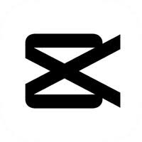

CapCut para Principiantes: Guía rápida + Opinión real
CapCut se ha convertido en una de las apps más utilizadas para editar videos desde el celular. En este artículo te mostramos cómo usarla desde cero y te damos nuestra opinión personal sobre si vale la pena.

¿Qué es CapCut?
Es una aplicación gratuita de edición de video creada por los mismos desarrolladores de TikTok. Permite recortar, añadir efectos, música, texto, filtros y más desde el móvil.
¿Cómo se usa CapCut? (Guía básica)
- 📲 Descarga la app desde la Play Store o App Store.
- 🆕 Abre CapCut y pulsa en “Nuevo proyecto”.
- 🎞️ Selecciona tus clips o fotos.
- 🎨 Agrega texto, música o efectos desde los menús inferiores.
- 📤 Exporta el video y compártelo donde quieras.
¿Vale la pena usar CapCut? (Opinión personal)
Sí. Es fácil de usar, tiene herramientas potentes para una app gratuita, y es perfecta si estás comenzando en el mundo de la creación de contenido.
La interfaz es intuitiva, y no necesitas tener conocimientos previos en edición para lograr resultados decentes.
Resumen:
- ✔️ Fácil de usar
- 🎬 Ideal para TikTok, Reels y YouTube Shorts
- ⚠️ Puede haber marca de agua en algunas funciones
💡 Tip: Puedes usar plantillas prediseñadas si no sabes cómo empezar. ¡Solo selecciona “Plantillas” en la pantalla principal!
← Volver a Apps